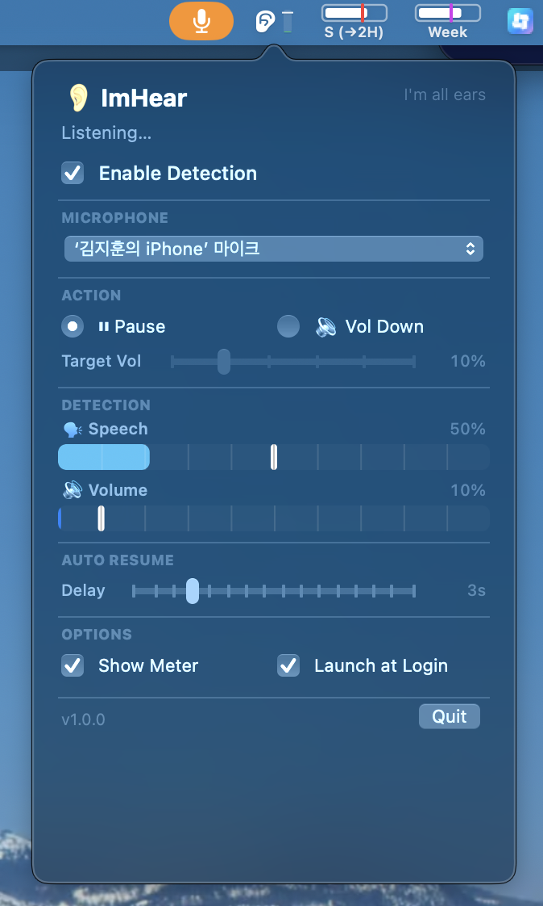

Uses Apple's SoundAnalysis to detect human speech from your microphone in real-time.
Pauses your music/podcast when speech is detected. Resumes automatically after a configurable delay.
Alternatively lower the system volume instead of pausing — great for background music.
Real-time status bar visualization showing speech and volume levels with threshold indicator.
Adjust speech sensitivity, volume gate, resume delay, target volume, and more.
Checks GitHub for new releases and updates itself with one click.
macOS 14 Sonoma or later · Microphone permission · Accessibility permission